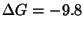
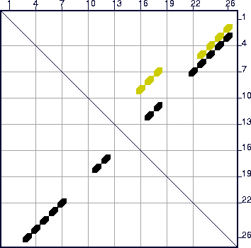
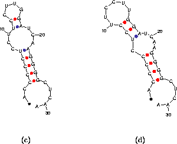

The energy dot plot is an integral part of the folding prediction. Consider the
folding of a short RNA sequence:
ACCCCCUCCU UCCUUGGAUC
AAGGGGCUCA A,
using default parameters.

kcal/mole at
37 ,
so
rather than 5% of
,
so
rather than 5% of  .
A single,
optimal folding is computed. A glance of the energy dot plot , shown in Figure
13, reveals the optimal folding in black dots (symbols), but
another set of yellow dots, indicating base pairs in at least 1 other
suboptimal folding. The default value of `W' (2, from Table
3) is too large for this other folding to be predicted, but
a glance at the dot plot shows that something else is there. When
the sequence is refolded with `W'=0, a second, totally different
folding is predicted. Figure 14 displays these foldings with
individual bases drawn.
.
A single,
optimal folding is computed. A glance of the energy dot plot , shown in Figure
13, reveals the optimal folding in black dots (symbols), but
another set of yellow dots, indicating base pairs in at least 1 other
suboptimal folding. The default value of `W' (2, from Table
3) is too large for this other folding to be predicted, but
a glance at the dot plot shows that something else is there. When
the sequence is refolded with `W'=0, a second, totally different
folding is predicted. Figure 14 displays these foldings with
individual bases drawn.
|  |
|  |
 | Michael Zuker Institute for Biomedical Computing Washington University in St. Louis 1998-12-05 |